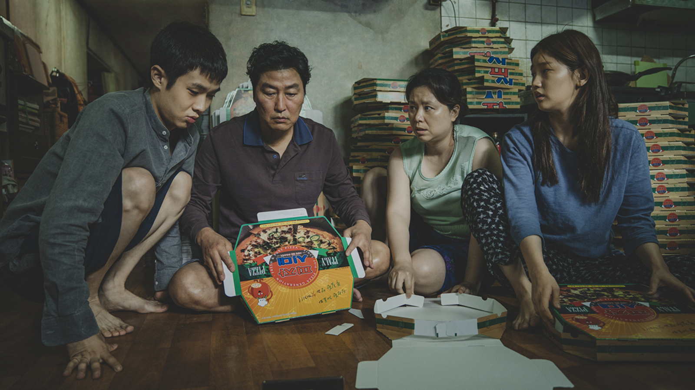
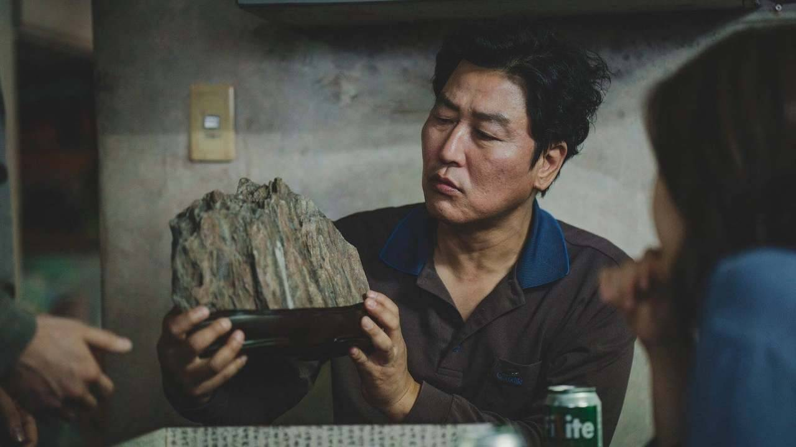
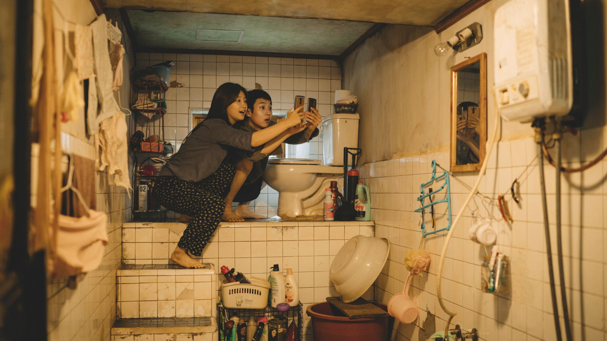
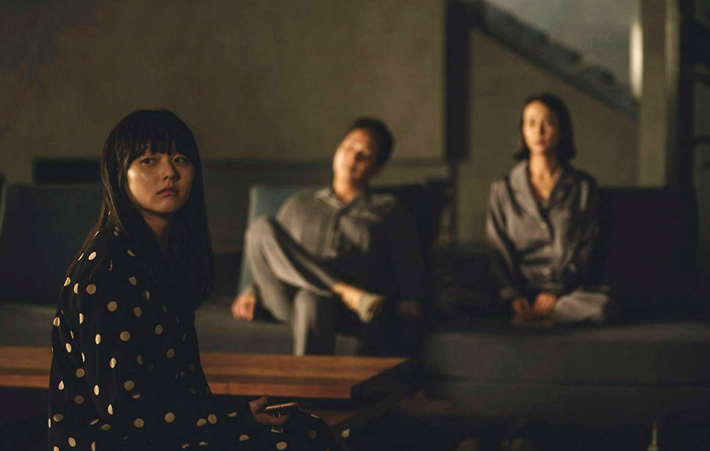

PARASITES

Parasite (Korean: 기생충; RR: Gisaengchung) is a 2019 South Korean black comedy thriller film directed by Bong Joon-ho, who also co-wrote the screenplay with Han Jin-won. It stars Song Kang-ho, Lee Sun-kyun, Cho Yeo-jeong, Choi Woo-shik, Park So-dam, Jang Hye-jin, and Lee Jung-eun and follows the members of a poor family who scheme to become employed by a wealthy family by infiltrating their household and posing as unrelated,highly qualified individuals.
Parasite premiered at the 2019 Cannes Film Festival on 21 May 2019, where it became the first South Korean film to win the Palme d'Or. It was then released in South Korea by CJ Entertainment on 30 May 2019. Parasite won a leading four awards at the 92nd Academy Awards: Best Picture, Best Director, Best Original Screenplay, and Best International Feature Film, becoming the first non-English film to win the Academy Award for Best Picture.

PLOT

The Kim father Ki-taek, mother Chung-sook, daughter Ki-jung, son Ki-woo—live in a small apartment, have low-paying temporary jobs as pizza-box folders, struggle to make ends meet. Min-hyuk, a friend of Ki-woo's, gives the family a scholar's rock meant to promise wealth. Leaving to study abroad, he suggests that Ki-woo take over his job as an English tutor for the daughter of the wealthy Park family, Da-hye. Ki-woo poses as student and is hired by the Parks.
The Kim family recommends one another as unrelated and highly qualified workers to take over as servants of the Parks. Ki-jung poses as "Jessica", an art therapist to the Parks' young son, Da-song. Ki-jung frames Mr. Park's chauffeur for having sex in the car by leaving her underwear there, and Ki-taek is hired to replace him. Finally, Chung-sook takes over as the Parks' housekeeper after the Kims exploit the peach allergy of the long-time housekeeper, Moon-gwang, to convince Mrs.

THEMES AND INTERPRETATIONS
The main themes of Parasite are class conflict, social inequality and wealth disparity. Film critics and Bong Joon-ho himself have considered the film as a reflection of late-stage capitalism, and some have associated it with the term "Hell Joseon" (Korean: 헬조선), a phrase which has become popular, especially with young people, in the late 2010s to describe the difficulties of life in South Korea.
This term came out because of the youth-unemployment due to high education and the crisis of home affordability happening in South Korea. Critics have also considered the themes of colonialism and imperialism. According to Ju-Hyun Park, the film plays out within "the capitalist economic order inaugurated and upheld in Korea by colonial occupation," and the use of English language in the film denotes prestige within that economic system.
TRAILER
©KURETS LIUBOV INSTAGRAM: @LIUBAA.A